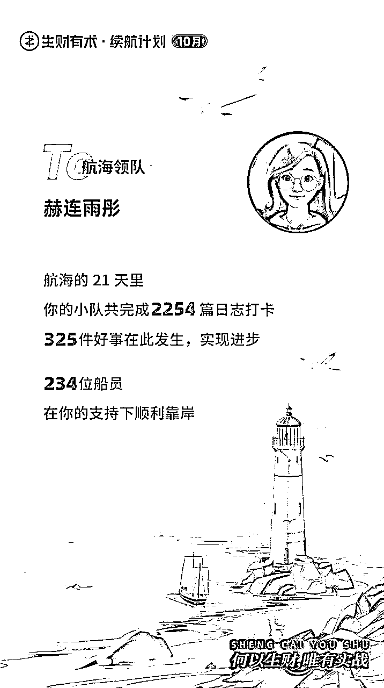
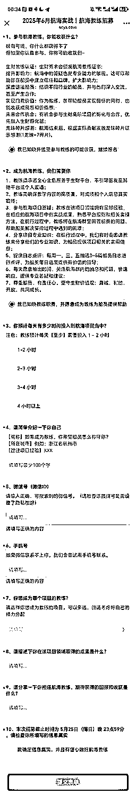
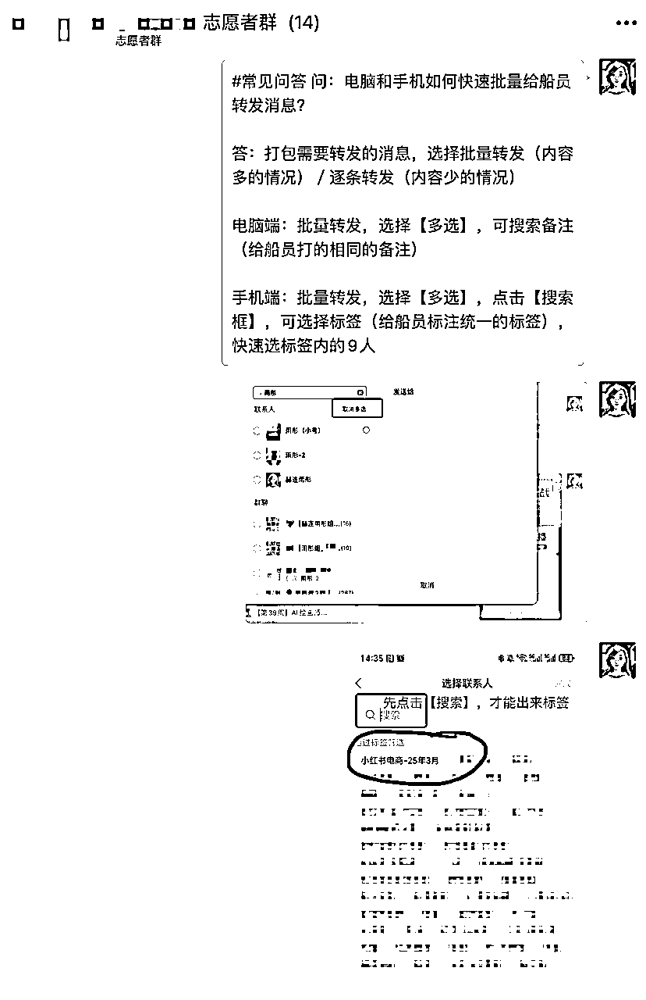

来源：https://akm6yioxpn.feishu.cn/docx/VDGwdQZyJoXtFyxX92EcSmIQnbf
哈喽，大家好，我是赫连雨彤。2年+生财圈友。
祝贺生财9岁生日快乐，我为自己的第八期志愿者做个复盘，欢迎大家一起交流学习。
之前也写过一次志愿者复盘，有兴趣的伙伴也可以跳转查看～
2025，期待更优秀的自己～
我的「双重身份」成长图谱
在志愿服务历程中，我以志愿者与领队的双重身份，完成了从新人到“细节控”的蜕变。



排名：3

排名：1
排名：2

排名：4
第八期，3月航海志愿者的评级查询入口


从0到1：志愿者报名与筹备的「主动法则」
踏入生财的志愿服务领域，报名环节是不容小觑的关键节点，它就像一把钥匙，能为你打开充满挑战与机遇的成长之门。
生财的【知识星球】和【微信航海群】是发布志愿者招募信息的核心阵地，这里就像是信息的“宝藏库”。
我之前看到了知识星球的招募动态，以为自己报名已经够快了，实际上其他志愿者报名的手速更快，导致自己与心仪的志愿服务项目失之交臂。
这也给我敲响了警钟，下次一定要眼疾手快，养成时刻关注的习惯，不错过任何一条重要信息。


一旦在知识星球或航海群发现招募信息，“快”就是制胜关键。这就如同一场紧张刺激的限时抢购，名额有限，先到先得。拖延只会让机会从指缝中溜走。
有的圈友，看到招募信息后，思考选择，甚至二次修改提交志愿表，实际上我们犹豫的时间，别人已经把报名名额占满了。
所以，当招募通道开启，不要犹豫，第一时间提交报名资料，抢占先机。
建议：
提前查看航海选题，把自己想要报名的第一志愿者和第二志愿提前想好。等志愿者招募链接一发布，先报名为敬。

对于第一次报名志愿者的萌新来说，积极的准备能为你的报名增添厚重的砝码。
咱们可以提前梳理过往的社群经验、沟通技巧等相关经历，清晰地呈现自己的能力。
在报名资料中，描述一些自己曾经做过哪些和志愿者相关的案例，真诚地表达对志愿服务的理解，比如你希望通过志愿服务实现怎样的价值，能为团队和参与者带来什么。这些额外的用心，会让运营人员看到你的诚意与潜力，大大提高入选几率。
教练报名准备

实习志愿者，报名准备
往期志愿者报名准备
不论报名志愿者还是领队，咱们都需要：


置顶「生财有术知识星球」和微信航海群，关注运营艾特所有人的消息。

收到运营的志愿者招募预告后，提前设置“报名闹钟”。如：确定某日20:00点发布招募星球贴，提前设19:58的闹钟提醒
如果报名的航海项目，录取的领队/志愿者人数少，或者在报名时间上落后一步，导致报名的【领队】或【志愿者】落选。
建议：及时向运营私聊报备，申请候补志愿者。

进入候补名单后，保持耐心和积极的心态。时刻关注项目动态，做好随时上岗的准备。不要因为一时的等待而松懈，因为机会随时可能降临。
在等待过程中，也可以完善自己的志愿者服务SOP，提升相关技能，以更好的状态迎接可能到来的机会。
以下生财的手册，可复习，整理属于自己的SOP。实际航海：以运营发布的最新手册为准。多和领队确认。
📚航海实战-志愿者手册：
📚航海实战-志愿者SOP及话术：https://scys.com/t/BOA7rh3H
通过工具标准化、话术模块化、认知清晰化，在开船前完成90%的基础服务框架搭建，避免航行期手忙脚乱。
打开链接后，可复制到新页面，二次编辑
官网-可下载Windows / Android / iphone / macOS版本
http://www.eyy250.com/index.html
作用：提前把模版话术准备好，打开微信后，直接点击复用。
了解手机键盘，巧用【快捷短语】

制定《提醒频率确认表》避免越界
| 维度 | 允许行为 | 禁止行为 | 决策逻辑 |
|---|---|---|---|
| 提醒频率 | 按约定频次提醒（每日/不足3日），最后1天23:00可柔性补提醒 | 未约定情况下每日多次轰炸，凌晨提醒 | 尊重船员作息，避免触发微信投诉机制 |
| 隐私介入 | 微信私信通知，必要时短信补充 | 拨打微信电话/手机号（除非船员快掉海了，提前发微信告知情况） | 海外船员案例：有时差，需要提前确认国内的00:00点在对方所在地区的时间。按需提醒 |
| 问题处理 | 记录问题→群内@领队→24小时未回复则@运营 | 擅自承诺解决方案（如“押金一定能退”） | 避免因政策变动引发信任危机 |
| 情绪管理 | 用幽默文案化解抵触（如“打卡=赚时薪100元”类比） | 与船员争论、宣泄个人情绪 | 保持服务者中立视角，聚焦解决问题 |
航海实战：21天服务的「细节攻坚」
👀S 类好事：
S 类好事，特指直接赚到大钱和开了很多单，或者达成了某类对赚大钱有重大影响的成就。
👀A 类好事：
A 类好事，特指有一定小成绩，在现在的基础上取得了一定突破的成就。
👀新奇特类好事：
新奇特类好事，特指在非互联网生意里取得的成绩或突破。

根据提醒打卡的需求，我将船员分成了3类，每个类型做不同的特殊备注
给对方的备注：名字 + (x月xx项目船员)
给对方的备注：③ + 名字 + (x月xx项目船员)
给对方的备注：名字-不提醒 + (x月xx项目船员)

主动询问
多次提醒打卡，没有打卡的船员，可以主动询问一下对方是否遇到什么问题
积极的船员：
对方上岸后，可引导冲刺15天王者 / 21天巨人

约定不提醒的船员：

[太阳]明天开始打卡，打卡内容可参考：

再小的进步，也值得被记录
比如：变现了 / 出单了 / 完成了项目中的比较难的某个卡点等
好事日志，小技巧分享
不要害羞，也不要不好意思，加油~

[太阳]作业批改：chatGPT
[机智]特点：对数据很敏感
[咖啡]建议：日志打卡，收获里面，视频多少播放量，涨粉多少，点赞收藏多少，数据都可以写上去～
水日志的行为，包含但不限于：
1、重复文案，凑字数

xxx，温馨提示一下
打卡的时候，3个模块尽量不要写一样的内容，容易被判水日志，也就是无效打卡。
还有可能会被运营截图，拿去做负面教材！
ps：已打卡日志，可修改内容～
2、打卡内容，全是乱七八糟随便凑出来的文案
水日志，文案举例：
收到款就会饿我好日u文化iu如何为借口的身份挥洒的回复我和四u热舞i会让发动机是开放式的空间放寒假啊水淀粉绝对是分开的时间发卡迪哦呜呃日哦我去热饭忘记哦i，hdoiqwioskmlew.r，为认监委考虑弱iu432894为UI的回复的时间付款即可
3、一模一样抄袭别人的作业

4、同一人连续几天提交相同的日志；
......

教练给船员点评的日志，单独整理，打包私聊船员，方便船员快速回顾。
关注船员日志，如果有系统落选的【好事日志】，整理后发送领队，让领队协助修改。

船员的问题发布到交流群后，若长时间未得到教练的回复。
咱们可协助转发问题到志愿者小群，请领队发到教练群，让教练关注问题和解答。

交流群里，如果发现船员提问没有带 #举手 标签，可私聊提醒对方，用正确的格式提问
教练分享的精华内容，批量转发船员学习，让船员快速获取重要信息

船员不回消息，尝试的几种文案
宝子，你是不是被绑架了，如果不方便的话先回个1
每天花10分钟打个卡，12天一共120分钟，就能拿回199押金，相当于时薪100块。
按照正常工作，一天工作8小时，一个月22天，相当于月薪= 100*8*22=17600元。
动动手指打个卡，瞬间就在做着月薪将近两万的工作，你说这个打卡是不是超值？
今天顾客投诉我了，说我炒的菜很咸，厨师长把我的锅打翻了，问我盐是不是不要钱。我不敢反驳，我没有多放盐，只是炒菜时想到你还没有在【小红书电商-高客单蓝海】航海打卡，眼泪掉进了锅里。好了，不说了，我相信你肯定会打卡的~
[船员名字]，咱们打卡方面有遇到什么问题吗？
如有问题，可以随时和我说哈[愉快]


嗨，【船员名字】
明天（周x）晚上20:00靠岸仪式，有个船员复盘的环节，你要不要也来写个航海复盘呀？
做的好的地方，做的不好的地方，以后改进的地方…
复盘参考：
在航海的 21 天中，你的收获是什么？有哪一个瞬间让你印象最深刻，帮助最大的呢？
（本次的项目跑通了没有？获得了哪些成果？有没有认识新朋友？是否学到了新技能……）
200字以内即可~
这个复盘参考也可以看下
咱们写好了，可以发我看看哦～
晚上到咱们发言环节的时候，提醒你呀[愉快]

1.邀约话术
2.关怀话术
恭喜成功上岸[庆祝][庆祝][庆祝]，咱们记得在索引站的实战页，自助申请退保证金哟～
[太阳]退款周期：今天或者明天（常规是马上，哈哈）
[咖啡]如有问题，及时反馈哈[玫瑰]
退保证金链接：https://scys.com/mobile/home/activity


很幸运能碰到这么多很好的交流伙伴，未来的岁月，希望我们都能持续的学习成长，成功解锁更多副业。
交流群重要信息分享完毕后，如果一段时间后，领队有事，仍然未打包消息，咱们可以主动协助领队整理群里的大型分享，打包整理到志愿者小群，方便领队转发到禁言群。
志愿者大群看到好用的工具或者经验，可以转发精华内容到志愿者小群，方便其他志愿者学习，减少爬楼。


推荐类型：用于区分【推荐点评日志】还是【推荐好事日志】
日志发布时间：方便领队从后台对应日期，查找和修改落选的好事
推荐理由：让领队知晓志愿者为什么推荐该日志
日志链接：方便教练和领队查看日志详情
推荐类型：点评日志
日志发布时间：20250320
推荐理由：-
日志卡片
推荐类型：好事日志
日志发布时间：20250320
推荐理由：-
日志链接：-

手机端日志详情，进入的页面，顶部标题一定得是【生财有术・会员航海日志】才可以，否则页面不对。


把自己的志愿者小技巧发在群里和大家一起交流，提高志愿者协助效率


结合其他志愿者的分享问答，整理分享给到自己组的小伙伴


故事现场：
航海的最后一天，我违反了和其中一个不提醒打卡船员的约定，因为担心对方忘记打卡，而进行了一次提醒打卡。对方没有回复我。后面想起，挺不好意思的。
启示：
故事现场：
船员在国外，剩下时间都不能忘记打卡，才能上岸的那种。
我打船员的微信电话，本意是想给对方来个强提醒（看到拒接的那种），防止对方掉海，没想到我竟然打通了。
这让我感觉自己侵入了对方的私人空间。怪不好意思的。
启示：
心态问题，乐观一些，船员愿意接电话，说明对方可能也是不介意的。

故事现场：
不少志愿者在群里晒图，说自己的微信账号被提示有问题。
启示：
故事现场：
电脑端发起的好友申请，电脑关闭后，切换到手机端微信时，船员才通过好友，咱们之前添加的备注和标签会不起作用，导致需要重新添加备注和标签
启示：
我的「效率军火库」：从手忙脚乱到游刃有余
志愿者工作的本质是「用系统对抗混乱」——通过工具分层管理信息、用流程固化重复动作、以数据驱动决策，把80%的精力聚焦在20%的核心价值（如船员赋能、资源链接）上。
以下是我通过实战打磨出的效率体系，可直接复用至各类项目管理场景。
1、飞书表格「动态备注系统」
痛点：30+船员的需求跟踪易遗漏，传统表格无法实时标记状态变化。
解决方案：
2、微信群「表情符号备注」
针对不同的微信群聊，可以在群聊信息的【备注】里面，添加上不同的表情符号
主要目的：区分航海交流群和航海禁言群。
防止看错群名字，发错消息。

痛点：新人参加航海，不了解规则易慌乱，重复沟通消耗时间。
解决方案：
| 场景 | 模板数量 | 核心目标 | 示例话术（已验证高响应率） |
|---|---|---|---|
| 新船员破冰 | 3条 | 建立信任+清晰规则+降低焦虑 | “在上船前，有三件事情需要我们一起协助完成，预计会花费你 5 分钟左右的时间～” |
| 老船员唤醒 | 1条 | 快速确认+轻量化互动+激活参与感 | “看到你之前也参加过航海，算是老航海人啦，具体的航海规则咱们就不说了，来，上船！” |
| 围观船员确认 | 1条 | 明确提醒边界+传递关怀 | “打卡不足12次会丢押金，不足3天提醒，平时不打扰～” |
| 通用场景 | 7条 | 覆盖航海介绍、邀请进群、改备注提醒、航海目标、提醒频率、航海日历等 | “两个群都已经邀请你啦，进群后可以拍一拍我~” |
📚航海实战-志愿者手册：
📚航海实战-志愿者SOP及话术：https://scys.com/t/BOA7rh3H
我是生财有术【xxx】航海的志愿者-xxx，你的报名审核通过了，我来邀请你进群~
哈喽，你好呀，我是【xx项目】志愿者-xxx，可以叫我xx，现在来邀请你上船~
了解到你是第一次参加航海，我大概讲一下航海的相关内容哈。
航海以自助实战为主，生财提供项目手册，如果你有不懂的可以在航海群 #举手 提问，会有专业的教练进行答疑。
在上船前，有三件事情需要我们一起协助完成，预计会花费你 5 分钟左右的时间～
（记得打开通知哦，主要用于提醒打卡）
发送最新的航海公约图（找领队或者运营要）
举例：2025年6月的航海公约

我来【划重点】总结一下航海公约：
在此之前，需要你关注一下 #公众号：生财有术服务号
后续的提醒打卡、日志加精、好事推荐，都会通过服务号传达给你，通知要打开才可以收到消息哈。
哈喽，你好呀，我是【xxx项目】志愿者-xxx，可以叫我xx，现在来邀请你上船~
看到你之前也参加过航海，算是老航海人啦，具体的航海规则咱们就不说了[呲牙]
这次由我来为你保驾护航啦，一起成功上岸哇，来，上船！
接下来，我会邀请你进入2个航海群：
【航海交流群】✅是航海的主要阵地，是大家交流、答疑、分享、链接的地方
【禁言通知群】🈲️这个群是咱们这个项目的通知群，主要用于重要信息同步，关注禁言群，重要信息不错过
两个群都已经邀请你啦，进群后可以拍一拍我~
为了大家交流、链接更方便，需要你在【航海交流群】按照格式：昵称-地区-总参与航海期数，更新你的群备注～
这样有任何问题的话生财官方也可以快速判断，并帮咱们处理的哈[玫瑰]
你的备注是：
从志愿者后台，复制船员的备注，单独一行发送给船员，方便船员复制粘贴

咱们这次的航海目标是什么呢[机智]
12次打卡/15次打卡/21次打卡？
12/15/21次打卡的航海证书，分别如下：

咱们希望志愿者提醒打卡，频率是怎么样呢？（无回复，默认1哦）
1、每天提醒
2、休息不足3天开始提醒
ps：21:00-23:59之间提醒，志愿者提醒之前已打卡，则不提醒
对了，后台显示咱们是【围观船员】，不需要咱们志愿者提醒打卡的是吧？
接下来的航海，正常情况下，我将不再对你进行打卡提醒哦～
当然，如果咱们打卡的休息时间不足3天了，我将进行提醒打卡，这样可行不？
以防万一，咱们忘记打卡而丢失押金丫～
[船员名字]，x月开船时间是x月x号（下周x）晚上8点，视频号直播形式，咱们记得预留时间哦～
发送对应的航海日历，让船员了解航海的全貌。

区分船员的类型：
根据准备好的话术，提前整理到【易歪歪】工具 / 快捷短语（手机键盘）上，根据船员的身份，发送不同的文案。
新船员-打招呼01
新船员-打招呼02
新船员-打招呼03
通用打招呼01
通用打招呼02
通用打招呼03——航海目标
通用打招呼04——提醒频率（非围观船员的情况发送）
通用打招呼05——同步航海消息
老船员-打招呼
通用打招呼01
通用打招呼02
通用打招呼03——航海目标
通用打招呼04——提醒频率（非围观船员的情况发送）
通用打招呼05——同步航海消息
围观船员——打卡提醒
哈喽，圈友下午好[咖啡]
[太阳]今天下午xx点破冰仪式结束，记得及时发自我介绍哦～（已发忽略）
[太阳]今晚开船仪式在20:00点的直播间，大家记得预约，不要错过～[庆祝]
[太阳]航海手册，预计明天中午开放～
[太阳]明天开始打卡，打卡内容可参考：
...
2025大家一起生财有术～
已预约开船仪式，可拍拍我[爱心]
圈友晚上好，
20:00的开船仪式开始了，记得观看哦~
直播结束后，再次点击分享链接，可查看录播~
直播开始啦，咱们记得学习哦~
查看回放，再次点击分享链接即可
附带打卡传送门：


教练分享的重要信息和资料，可私聊给到船员，有以下作用：

借助AI（deepseek、豆包、通义千问、KIMI等等），可生成系列的21天提醒打卡文案。
你是一位志愿者，需要提醒船员打卡，今天是周三，距离航海结束只剩1天，现在需要给未打卡的船员发提醒打卡的文案，要求积极向上，5条不同的文案
你是一位志愿者，需要提醒船员打卡，今天是周六，现在需要给船员发提醒打卡的文案，要求幽默有趣押韵， 5条不同的文案

你是一位志愿者，现需要一份催打卡文案，参考以下文案来21天不同的催打卡文案
参考文案：
今天顾客投诉我了，说我炒的菜很咸，厨师长把我的锅打翻了，问我盐是不是不要钱。我不敢反驳，我没有多放盐，只是炒菜时想到你还没有在【小红书电商-高客单蓝海】航海打卡，眼泪掉进了锅里。好了，不说了，我相信你肯定会打卡的~
以下是21天不同版本的催打卡创意文案，延续了原版幽默风格和场景化设计：
Day 1（外卖员版）
刚才送餐超时被平台扣钱，客户说餐盒里都是水渍。其实是我骑车时想着你还没在【小红书电商-高客单蓝海】航海打卡，汗水顺着下巴滴到袋子里。不过没关系，我知道你今天肯定会打卡的~
Day 2（理发师版）
给客人剪发时手抖剪缺一块，他说像被狗啃的。都怪我分心想着你还没在航海日志打卡，现在正跪着给客人办会员卡赔罪呢...你肯定不忍心看我这样对吧？
Day 3（园丁版）
刚被物业投诉浇花淹了电梯井，其实水枪失控是因为想到你还没打卡。现在整栋楼都在找"水漫金山"的凶手，救救孩子吧~
Day 4（程序员版）
代码写错把用户头像全变成可达鸭，老板让我今晚住公司。如果你现在完成【小红书高客单】航海打卡，这些鸭子说不定就变回原样了？
Day 5（宠物美容师版）
给柴犬修毛时剃出个地中海造型，狗主人说要送我上热搜。还不是因为惦记着你没打卡手抖了！汪星人的尊严就靠你拯救了~
Day 6（健身教练版）
带学员深蹲时走神数错数，现在被罚做100个波比跳。每跳一下都在默念"XX该打卡了"，地板快被我砸出坑了...
Day 7（摄影师版）
拍婚纱照把新人拍成表情包，新娘说要去消协投诉。镜头里全是"还没打卡"的弹幕，这单黄了的话...你懂我意思吧？
Day 8（快递员版）
分拣快递时把生鲜包裹扔进了服装堆，监控显示我当时在碎碎念"XX怎么还没打卡"。现在大闸蟹正在拆你的羊毛大衣，急！
Day 9（主播版）
直播时把"家人们"说成"打卡人们"，老板说我被航海计划搞魔怔了。如果你现在完成打卡，明天我就不用戴兔耳朵谢罪了QAQ
Day 10（咖啡师版）
给客人做了杯"航海特调"，浓缩咖啡+酱油+芥末。都怪想着打卡走神了，现在顾客说要送我上奇葩料理大赛...
Day 11（插画师版）
画商稿时把甲方爸爸LOGO写成"小红书打卡"，现在正在会议室表演土下座。救救画手，孩子不想改第27稿了！
Day 12（空乘版）
发餐时把"鸡肉饭"说成"打卡饭"，整个机组都在学我说话。机长说再完不成KPI就要让我去擦舷窗了TAT
Day 13（图书管理员版）
整理书库时把《百年孤独》归到菜谱区，满脑子都是"高客单蓝海"。现在学生们在美食区找马尔克斯，场面逐渐失控...
Day 14（婚礼司仪版）
把"交换戒指"说成"交换打卡"，新娘笑场口红粘牙上了。这将成为我职业生涯的滑铁卢，除非...（疯狂暗示）
Day 15（动物园饲养版）
喂食时把香蕉塞给了企鹅，北极熊在啃芒果。满脑子都是航海日志打卡的事，现在动物们集体绝食抗议了！
Day 16（钢琴老师版）
教小星星弹成航海进行曲，家长说孩子参加了邪教组织。如果你现在打卡，我还能狡辩这是最新教学法...
Day 17（超市理货版）
把TT摆在婴儿奶粉旁边，经理说要送我上社会新闻。还不是因为想着"蓝海""高客单"走神了！速来打卡救我狗命！
Day 18（游泳教练版）
教换气时自己沉底了，学员拍了我扑腾的糗照。水底最后吐的泡泡都是"快打卡"，现在整个泳池都在传阅表情包...
Day 19（算命先生版）
昨天把客人姻缘签写成"速去小红书打卡"，现在道观被举报搞网络诈骗。这位施主，你与我道门有缘啊~
Day 20（幼儿园版）
教小朋友唱"拔萝卜"变成"快打卡"，现在整个班都在问老师是不是要改行。园长说再这样就去后勤削土豆...
Day 21（最终冲刺版）
航海最后一天在监控室值班，把"注意安全"广播成"立即打卡"。现在全公司都知道我在追星了，不过这次真的是最后一次催你啦！
每天更换不同职业场景，保持意外感和新鲜度。结尾保留温柔催促+信任感，符合互联网语境的同时，通过夸张的职场糗事引发会心一笑，提升打卡动力。
答：听说，这么加船员，就没有找不到的
答：提醒到位了就行，不强求。
卖可怜的方法，比如：
因为咱们小组的昵称没有改全
你们志愿者在别的志愿者面前都好自卑
答：提醒一下船员，举例：
哈喽，小伙伴，咱们记得进群哦，航海直播都是发在群里的，非群成员不可查看直播。如果有问题，在群里 #举手 ，教练看到了才能协助解答哦
答：添加好友之前，就可以做的事
1.给船员打标签
2.群里邀请的时候，点击标签，可以快速选择标签里面的所有人，进行群聊邀请


答：
PC端：
进入航海交流/禁言群→[搜索群成员]→[输入给所有船员打的相同备注]→[船员头像]→[查看群昵称]

手机端：
点击微信底部[通讯录]→[标签]→[船员标签]→[船员头像]→[朋友资料]→[更多信息]→[我和他的共同群聊]→如果设置了群昵称，会在群聊名称下方显示

答：官方给志愿者培训完之后（志愿者培训，以官方通知时间为准）
答：航海期间只要打卡12次就能退押金
考虑到你在国外有时差，我的建议是，在航海21天期间打卡13次
这样你按照所在国家的时间去操作就行了，就可以不考虑时差
比如：固定一个时间段打卡，但是这个时间段在国内的时间不要是22:00-2:00这个区间
这样可以避免同一天打卡
答：官方需要保证圈友们的会员权益。
你两个号的实名不一致，不太确认是一个人。
建议用你本人号进去哈。
答：夫妻、亲子关系或本人的其他微信都可以～
如果圈友不方便提供自己比较隐私的结婚证明或者户口证明，以下的方式都可以验证邀请进群
答：
1、自己先在志愿者后台修改日志为【推荐好事】，让chatGPT复查；
2、推荐时间长了（2小时及以上），chatGPT还是没修改【好事】，则发群里推荐好事，让领队协助修改
答：带【好事】标识的就是选上了好事
1、上船后，还能改成【围观】不？
答：不能
2、上船后跳船，是不是就直接退船不退保证金？ 还是必须要在船上待着不用管打卡了？
答：跳船后，不退还保证金，最后不行动，就是没上岸
3、志愿者会知道哪几个是围观的船员吗？
答：会的。志愿者后台对于围观船员有专门的标签显示。
4、围观船员不打卡，可以退保证金吗？
答：如果围观船员打卡不足12次，不退保证金。
5、志愿者如果已经有报名的实战航海，需要主动退吗？
答：不用主动退，志愿者小群等领队发起接龙统计，等官方来退就行。主动退可能会导致志愿者后台异常。
1、志愿者要打卡么？
答：建议如果是准备真的学些东西，还是参与打卡；是否打卡，对小组的考勤都无影响
2、志愿者打卡记里程不？
答：不记小组里程，只记个人里程和个人排名
3、排名有什么用？
答：用来鼓励船员，增强团队凝聚力用
1、什么样的日志值得点评？
答：有想法、有突破、有问题、有卡点。总之就是需要教练进行讲解/鼓励的都可以
2、要推荐多少点评日志给到领队？
答：建议每个点评日1-3篇，可包含前一天（工作日）或前三天（周日-上周五）的日志，领队会进行二次筛选发给教练
3、船员日志被筛选后点评，要不要告知船员？
答：教练在群里对船员的日志进行后，可以私聊转发给船员，告知船员，你的日志被教练点评啦~
4、要如何发送点评日志？
答：将船员日志链接发给 #公众号：生财有术服务号 ，生成的日志卡片和推荐理由，一起发给志愿者小群
1、直播有回放么？
答：都有，一定有
2、怎么直播完还没看到回放？
答：会晚一点，需要导出再上传到后台，回放好了，领队会在群里通知
3、和另一个航海冲突了，怎么办？
答：冲突是正常的，选一个直播先听，根据现有卡点听直播效果最好，直播可以现场提问，回放只能看别人的提问
4、直播要通知船员么？
答：要的，每次直播都需要大家对船员进行批量转发预告，提前提醒，八点开播时也要批量的私聊转发直播链接给船员，保证大家尽量都听到直播
1、船员的日志我要看么？
答：都要看，尽量本组的船员都点赞，让船员知道你与他同在。
如果有好事日志没有选上，可以把船员的日志链接+推荐好事理由，一起发到志愿者小群，领队看到了会协助修改。
1、每个船员都要提醒打卡么？
答：不是的，开船前，和船员约定打卡频率，后面根据约定来提醒即可。
即将上岸，很晚未打卡的船员，适当提醒一下即可。
2、提醒在什么时间比较合适？
答：建议提醒时间在 20:00-23:00
3、有的船员一直不回我消息，我还要提醒他么？
答：不用非要等待回复，咱们提醒到位了即可。
他不理咱们，就说明他错过了和志愿者有交流的机会，是他的损失。咱们做好提醒记录就好了，把更多的精力放在更多值得的人上。
4、有的船员口头上说要打卡，但是到了行动完全不动咋办？
答：卖个萌，卖个惨，都行，或者把锅甩给领队，领队可以替大家背卖惨的锅。比如：
完不成任务领队要XXXXX处罚我了。
痛点：船员改群昵称不规范，人工逐一检查耗时费力。
操作步骤：
答：
PC端：
进入航海交流/禁言群→[搜索群成员]→[输入给所有船员打的相同备注]→[船员头像]→[查看群昵称]

手机端：
点击微信底部[通讯录]→[标签]→[船员标签]→[船员头像]→[朋友资料]→[更多信息]→[我和他的共同群聊]→如果设置了群昵称，会在群聊名称下方显示

效率对比：传统逐个检查需30分钟/组，此方法常规5分钟内完成，准确率100%。
批量操作
打包需要转发的消息，选择批量转发（内容多的情况）／逐条转发（内容少的情况）

荣誉之外：那些「看不见的成长复利」
生财航海的志愿者之旅，就像一场「能力定投」——你在服务中打磨的思维、积累的关系、沉淀的认知，会在未来某个时刻形成「成长奇点」。以下是我用2年时间验证的「非对称收益」，比A级评级更珍贵。
给船员划重点的习惯，延伸到日常沟通。
比如，给家人讲「今晚加班」时会说：「20:00前要改3版方案（What），老板盯着（Who），可能要到22:00（When），先不用等我吃饭啦～」信息传递效率提升50%。
清单结构（附职场/生活双场景示例）：
| 维度 | 航海场景 | 本职工作场景 |
|---|---|---|
| What | 今日3件事： | ①跟进A客户方案修改 |
| Who | 船员XX/领队XX/教练XX | 客户xx/部门同事xx/设计xx |
| When | 23:00前完成催打卡 | 14:00前确认方案初稿 |
| 延伸价值： | 完成目标 | 提高工作效率 |
有幸链接到不少和自己同一个职业的伙伴，我们也曾相互分享设计的教学课程。
当你用「能力迁移」的视角做志愿者，会发现每一次沟通都是「沟通能力」的刻意练习，每一次问题解决都是「项目管理」的沙盘推演，每一次链接都是「人脉资产」的零存整取。这些「看不见的积累」，终会在某个节点形成「认知跃迁」——或许是你突然看懂一个商业模型，或许是你轻松化解一次客户冲突，又或许是你遇到一个一拍即合的创业伙伴。
成长复利的关键，从来不是追求某个瞬间的爆发，而是像志愿者每天坚持「精准提醒」一样，把「正确的小事」做到极致，然后等待时间的回报。✨
当我在生财网址的【我的航海】看到「参与10期航海」的记录时，突然想起第一次做志愿者时的手忙脚乱——凌晨两点还在核对船员名单，生怕漏过一个人；
为了一句提醒话术，用AI生成无数文案。那时的我不会想到，这些「多做一点点」的小事，会在时光里长成一片森林。
每期航海，都能碰到新手志愿者，我把常见的问答都整理后分享，加上标签 #常见问答，每日再碰到类似的问题，我就搜索记录标签，快速定位搜索已有答案。
这些「多做的一点点」，起初只是出于「怕麻烦别人」的本能，后来却发现：当你把别人眼中的「分外事」做成「份内的标准」，细节就会变成你的「差异化标签」。
做志愿者的第500天，我突然意识到一个真相：每个船员的问题，都是你认知的一面镜子。
这些「照见」让我发现：服务不是单向的付出，而是通过解决他人的问题，不断迭代自己的思维精度和情感粒度。就像打磨一块玉石，每一次与他人的互动，都是去掉杂质、露出光芒的过程。
传统意义上的志愿者，可能是「按流程做事的执行者」，但在生财航海的两年里，我看到了三种「超越期待」的可能：
下一个两年，我依然会在夜晚23:50-23:55之前给快掉海的船员发最后一条提醒，会为了优化一个话术反复推敲，会在航海结束后，复盘自己的收获。因为我明白：成长从来不是某个耀眼时刻的爆发，而是无数个「多做一点点」的细节，在时光里慢慢发酵的结果。
就像生财航海的本质，从来不是「21天的打卡任务」，而是通过服务他人，学会在细节里扎根，在重复中创新，在付出中看见更辽阔的自己。
那些你认真对待的每个「小细节」，终会在未来的某天，连点成线，照亮你未曾想象的成长路径。✨
感谢一路走来，遇到的很多志愿者伙伴，教会我的成长。感谢顺序不分先后：多米杨LR、Y哥、文少、乐之、闯天下、骄阳、吴佳文、阿寻、辛拉面、Ajin等～